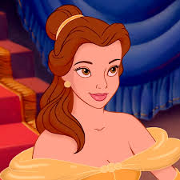
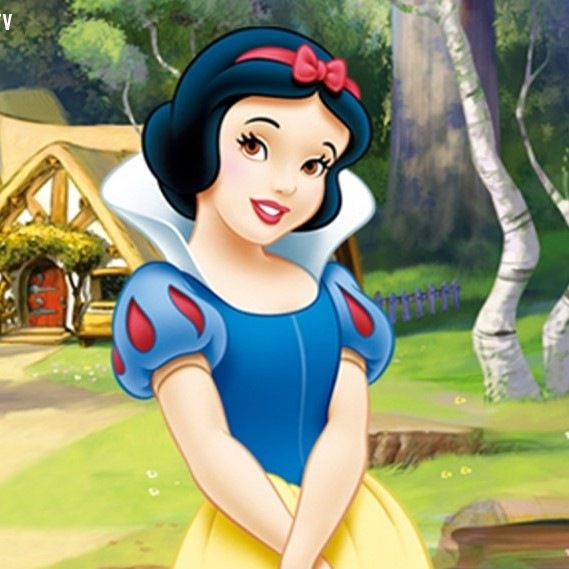
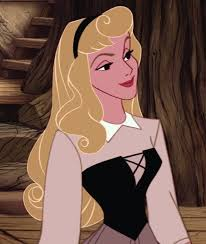
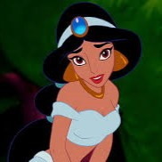
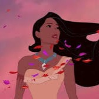
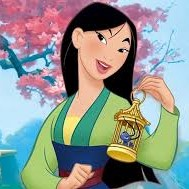
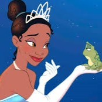
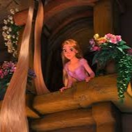
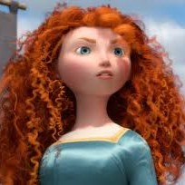
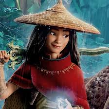

Cinderella

Cinderella là một cô gái nhà nghèo bị bắt làm nô lệ trong nhà cửa của bà mẹ kế ác độc và hai cô con gái gian ác của bà.
Câu chuyện kể về Cinderella và hành trình của cô từ một cô gái nghèo thành công chúa khi cô gặp gỡ hoàng tử trong một bữa tiệc của hoàng gia.
Thông tin đầy đủ của CindererllaBelle
Belle là một cô gái trẻ thông minh và độc lập sống trong một ngôi làng nhỏ ở Pháp.
Câu chuyện kể về Belle và cuộc phiêu lưu của cô khi cô bị giam cầm trong lâu đài của một con quái vật và sau đó phát hiện ra rằng ngoài vẻ bề ngoại quái dị, con quái vật thực sự là một hoàng tử bị nguyền rủa.
Thông tin đầy đủ của BelleSnow White
Snow White là nàng công chúa xinh đẹp tuyệt trần, tính tình diệu dàng phải chịu sự ganh ghét của dì ghẻ ( cũng là phù thủy) nhiều lần hãm hại.
Câu chuyện kể về Snow White với bản chất lương thiện của cô, nàng công chúa đã được những chú lùn trong rừng sâu ra sức giúp đỡ và cuối cùng cùng có cuộc sống hạnh phúc bên hoàng tử. Cuối truyện là sự trừng phạt cho cái ác của mụ phù thủy.
Thông tin đầy đủ của Snow WhiteAurora
Aurora sở hữu cho mình một bộ tóc vàng óng, đôi môi đỏ thắm, khuôn mặt xinh đẹp, tính tình hiền diệu… là một cô công chúa xinh đẹp khó ai sánh được
Câu chuyện kể về nàng cômh chúa phải chịu đựng sự nguyền rủa của mụ phù thủy khi phải ngủ say hàng trăm năm trong rừng sâu. Nhưng sau đó vị hoàng tử khôi ngô đã đến và phá giải lời nguyện trả lại sự tự do cho Aurora
Thông tin đầy đủ của AuroraAriel
Ariel là nàng công chúa của vương quốc dưới nước Atlantica, nàng có nét đẹp mê hồn và đặc biệt là giọng hát trong trẻo như dòng nước.
Trong một lần dạo chơi nàng công chúa đã phải lòng một chàng hoàng tử trên đất liền. Để có thể trở thành con người đi lại trên đất liền, một giao kèo với mụ phù thủy khi đánh đổi giọng hát tuyệt vời lấy đôi chân.
Thông tin đầy đủ của ArielJasmine
Công chúa Jasmine tiêu biểu cho một cô gái dòng dõi hoàng tộc : xinh đẹp, tính cách ngang tàng…
Nhưng từ khi gặp và phải lòng chàng trai nghèo tốt bụng Aladin thì công chúa Jasmine lại trở thành một cô gái phóng khoáng. Jasmine đã cùng với Aladin trải qua nhiều cuộc phiêu lưu thú vị bên cạnh thảm thần và đèn thần.
Thông tin đầy đủ của JasminePocahontas
Pocahontas là một cô gái có tấm lòng cao thượng và nét đẹp dịu dàng, luôn thích giúp đỡ mọi người thích phiêu lưu và khá phá thế giới.
Câu chuyện về Pocahontas là một cô nàng có năng lực siêu nhiên có thể giao tiếp với tự nhiên, linh hồn. Bộ hoạt hình Pocahontas có nhiều phần, mỗi phần lại là một chuyến phiêu liêu vô cùng hấp dẫn của Pocahontas.
Thông tin đầy đủ của PocahontasMulan
Điểm khác biệt của công chúa Mulan với các nàng công chúa khác là cô không hề yếu đuối mà có phần khá mạnh mẽ.
Câu chuyện kể về việc đã thay cha già tòng quân đánh giặc, việc mà thời kì đó không dành cho phái nữ. Trải qua muôn ngàn khó khăn, vất vả cuối cùng Mulan đã kết duyên cùng một vị tướng trẻ giỏi giang.
Thông tin đầy đủ của MulanTiana
Một bộ phim hoạt hình về chuyện tình nàng công chúa xinh đẹp và con vật xấu xí. Công chúa Tiana cũng là nàng công chúa thứ 9 trong bộ các nàng công chúa Disney xuất hiện lần đầu vào năm 2009.
Dựa vào truyện cổ tích “ hoàng tử ếch” của anh em Grim kể về câu chuyện nàng công chúa người Mỹ gốc Phi đầy cá tính đã tìm cách phá giải lời nguyền cho một chàng hoàng tử bị nguyền rủa bởi mụ phù thủy.
Thông tin đầy đủ của TianaRapunzel
Công chúa tóc mây Rapunzel là một cô nàng cực kì xinh đẹp với mái tóc dài, mềm mại và có phép thuật.
Chuyện kể về Rapunzel bị đánh cắp từ khi mới ra đời và phải ở với Gothel, bà ta đã giam cầm cô nàng suốt 18 năm trời trên một tòa lâu đài không có lối ra lợi dụng mái tóc của nàng để trẻ mãi không già. Sau đó là cuộc gặp định mệnh với siêu trộm Flynn Rider và những điều vô cùng hấp dẫn trong bộ phim.
Thông tin đầy đủ của RapunzelMerida
Merida là một nàng công chúa vô cùng mạnh mẽ với khả năng bắn cung siêu việt, tài đấu kiếm và đua ngựa của nàng cũng không thua kém bất kì chàng trai nào.
Chuyện về Merida là con gái thứ 16 của hoàng hậu Elinor và vua Fergus. Từ nhỏ, Elinor đã đặt nhiều kì vọng vào Merida điều đó vô hình dẫn đến những xích mích giữa 2 mẹ con.
Thông tin đầy đủ của MeridaMoana
Moana, con gái của trưởng tộc người Polynesia, một cô gái có ý chí mạnh mẽ. Cô được biển cả chọn để hoàn thành sứ mệnh trao trả lại trái tim cho một nữ thần.
Khi tai hoạ tấn công hòn đảo của cô, Moana đã buộc phải giương buồm ra khơi đi tìm Maui, một á thần huyền thoại, với hy vọng có thể cứu được người dân của mình.
Thông tin đầy đủ của MoanaElsa
Elsa là công chúa xinh đẹp mang trong mình sức mạnh băng tuyết mạnh mẽ nhưng cũng đầy nguy hiểm.
Câu chuyện kể về hành trình giúp bản thân điều khiển đước sức mạnh băng giá và tìm lại hạnh phúc tình cảm chị em trong hoàng tộc.
Thông tin đầy đủ của ElsaRaya
Nàng công chúa Raya được xây dựng với hình tượng mạnh mẽ và bất chấp mọi hiểm nguy để hoàn thành được nhiệm vụ được giao.
Câu chuyện kể những cuộc phiêu lưu của nàng công chúa Raya cùng những người bạn vượt qua những khó khăn, nguy hiểm để tìm kiếm rồng Sisu để tiêu diệt kẻ thù và thống nhất vùng đất Kumandra.
Thông tin đầy đủ của Raya